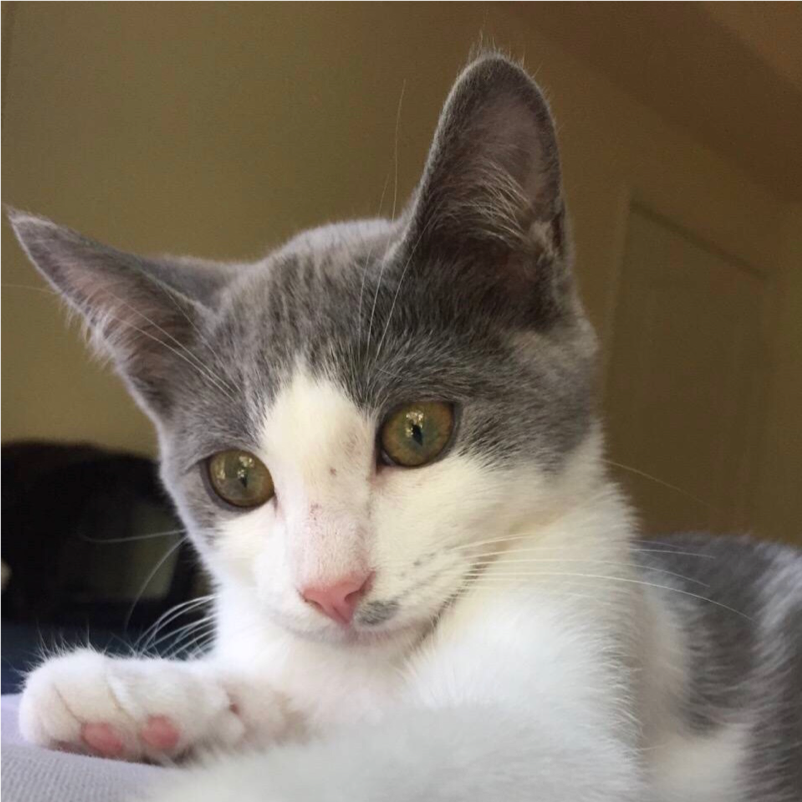
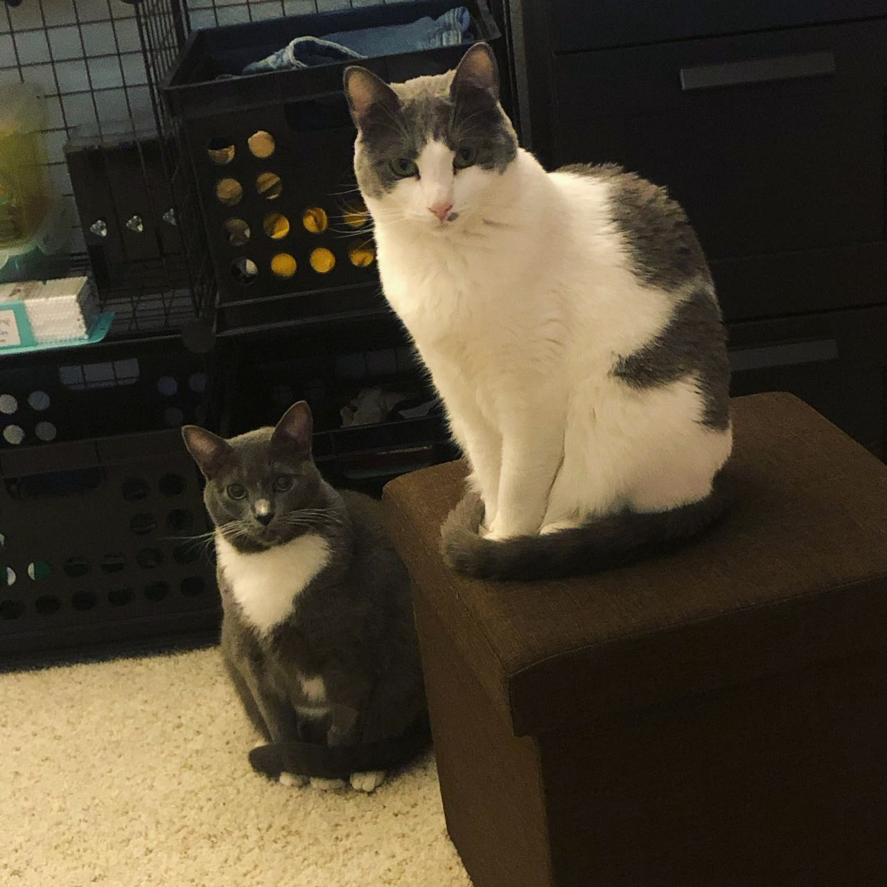

I am a Tenure-Track Assistant Professor in Computer Science, School of Computing, Southern Illinois University Carbondale.
🚀 I am hiring motivated Ph.D. students in AI, machine learning, and spatial science.
I work on Spatial Intelligence. I am interested in developing AI methods that integrate spatial thinking to learn from sparse, heterogeneous, and multimodal spatial data. My work bridges computer science with applications in environmental science, remote sensing, public health, digital humanities, and beyond.
I earned my Ph.D. in Computer Science from the University of Minnesota. My advisor is Prof. Yao-Yi Chiang. Check out my Ph.D. thesis and thesis presentation.
News
Joined Southern Illinois University as an Assistant Professor.
Our paper "Learning Context-Local Representation with Geospatial Foundation Model for Fine-Scale Spatial Prediction" was accepted at SIGSPATIAL 2026.
Our paper "An Ensemble Approach to Text-Based Georeferencing of Historical Map" was accepted at SIGSPATIAL 2026.
I defended my dissertation on June 1st, 2026.
Our paper "Estimating Mutual Information for Time Series and Temporal Event Sequences Across Diverse Analysis Tasks" was accepted at KDD 2026.
Our paper "FRIEDA: Benchmarking Multi-Step Cartographic Reasoning in Vision-Language Models" was accepted at ICLR 2026.
Show older news
Our paper "TiCLS: Tightly Coupled Language Text Spotter" was accepted at WACV 2026.
Our paper "Fine-Scale Soil Mapping in Alaska with Multimodal Machine Learning" was accepted at SIGSPATIAL 2025 (Oral).
Our paper "LIGHT: Multi-Modal Text Linking on Historical Maps" was accepted at ICDAR 2025 (Oral).
Co-taught UMN CSCI 5523: Introduction to Data Mining with Jina Kim.
I was awarded the UMN Doctoral Dissertation Fellowship for 2024-2025.
Our team won the first place in DARPA’s Map Feature Extraction Challenge.
I was awarded the UMN DSI-ADC Fellowship for 2022-2024.
My Cats

